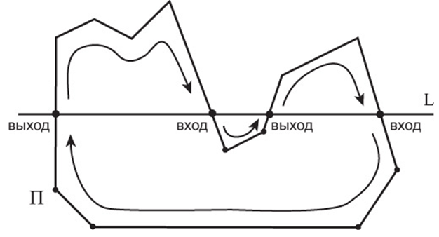
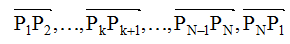
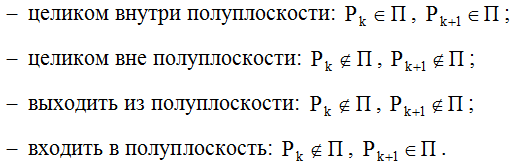
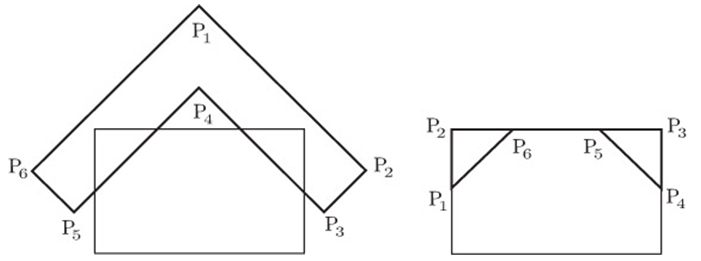

Для определения площади пересечения отверстий в форме произвольного многоугольника применяли алгоритм Сазерлэнда-Ходжмана [13]. Ключевым моментом в этом алгоритме является сведение задачи отсечения прямоугольником к задаче отсечения полуплоскостями. Действительно, прямоугольник представляется в виде пересечения четырех полуплоскостей. Поэтому достаточно поочередно отсечь части многоугольника, лежащие вне каждой полуплоскости (рис. 1.19).
Пусть многоугольник задан своими вершинами: P1P2…PN. – направленные ребра этого многоугольника.
Относительно произвольной полуплоскости П каждое направленное ребро PkPk+1 может находиться в следующих положениях:
Следующий алгоритм выводит в качестве результата вершины отсеченного многоугольника, обходя исходные вершины:
Данный алгоритм выводит вершины отсеченного многоугольника в порядке обхода. Пример работы алгоритма Сазерлэнда-Ходжмана приведен. После проведения отсечения четырьмя полуплоскостями получается многоугольник, отсеченный относительно прямоугольника. Заметим, что данный алгоритм очевидным образом применим для отсечения любого выпуклого многоугольного окна – достаточно представить это окно в виде пересечений полуплоскостей (рис. 1.20).
Практически единственным недостатком алгоритма Сазерлэнда-Ходжмана является не совсем корректная обработка случаев,
когда результатом отсечения являются несколько изолированных многоугольников. Результат алгоритма Сазерлэнда-Ходжмана
в этом случае содержит многоугольники и связывающие их отрезки [11, 15].
Вычислим площадь выпуклого многоугольника.
Пусть {(Xi,Yi)},i = 1,2,...,n – последовательность координат соседних друг другу вершин N-угольника без самопересечений.
Тогда его площадь вычисляется по формуле [14]:
Вышеописанные математические модели легли в основу написания программного обеспечения для моделирования работы универсального поворотного компенсатора с отверстиями круглой, овальной и многоугольной формы в упругих пластинах.